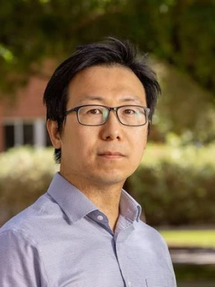
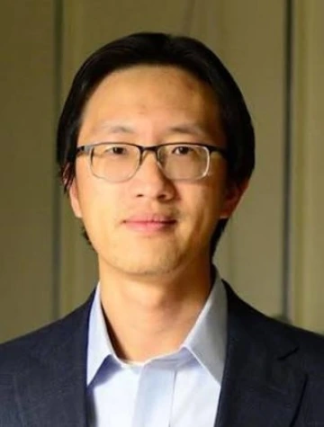
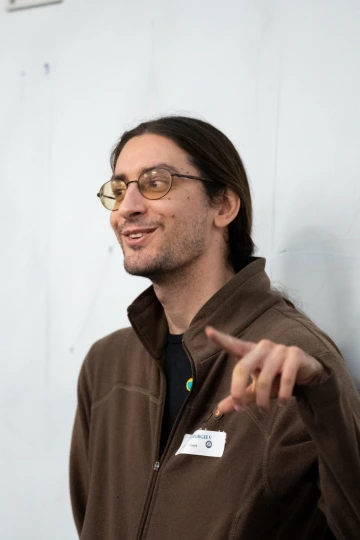
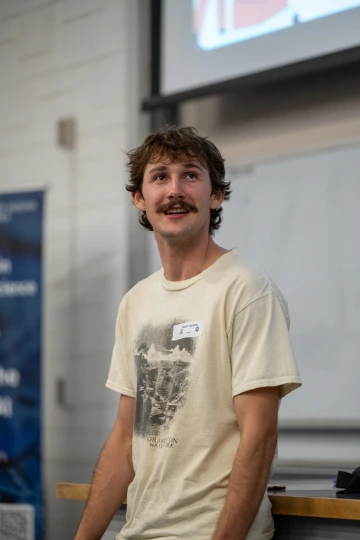
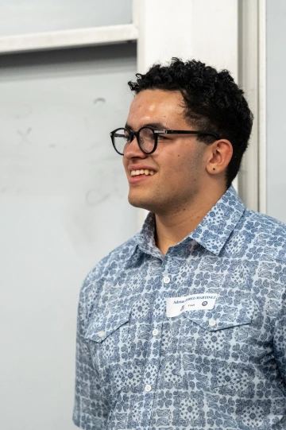

About
Purpose
By way of background, UA Physics Olympiad Group is established for the purpose to:
- facilitate in-person training for local middle/high school physics enthusiasts to train for the F=MA and USAPhO exams, and
- administer the F=MA and USAPhO exams at UA to local middle/high school physics students whose schools may not be offering such opportunities.
Vision
Our vision in creating this Group is to expose our student members to advance physics problems and entice them try to work through hard, but interesting physics problems, thereby cultivating and nurturing their interests in physics.
To be clear, our goal here is not for the students to know and master all or even most of the concepts and problems in the F=ma and USPhO exams.
We do not even expect our Student Members to understand everything that is discussed.
As long as each Student Member is having fun while trying to work through (or follow the discussions of) interesting and hard physic problems, I would consider it a success.
Registration
Unfortunately, registration is closed. The below section are for information only.
Dues: Our annual dues are $200 per person, which helps us cover our operating expenses and administration of the exam(s).
If you would like get started on registering, please find our highlighted Paperwork and Information below.
Paperwork and Information
To get started, we ask students to review and fill out this Survey Form: https://forms.gle/8YsjPHrvD192XMGS6 with their parents.
This will help with our coordination efforts.
You can skip the time of availability, if needed, as we will meet every other Fridays at UA from 4:30pm-7:30pm. Attendance for members is mandatory.
Additionally, we ask students to reply to this email with the List of Math and Physics Courses they have completed and are currently taking.
If the student has participated in any academic competitions, please also let us know. This will help our coaches to plan their training sessions.
We have a Junior Section (where members work exclusively on F=ma problems) and a Senior Section (where members join the Junior Section on the F=ma problems, but also work on USPhO problems).
We also have a UA Parent/Legal Guardian Form for parent(s) to review, ink-sign, and return. Student Members are registered once I receive a signed Parent/Legal Guardian Form and the dues.
Contact
To join, donate, and others, contact sunyb@arizona.edu
Staff
Directors



Coaches
Coaches: Our coach team is comprised of UA post-doctoral fellow, graduate students, and esteemed undergraduate students.



Webmaster: Yunming Ray Chan
Assistant Webmaster: Yunde Dalton Chan